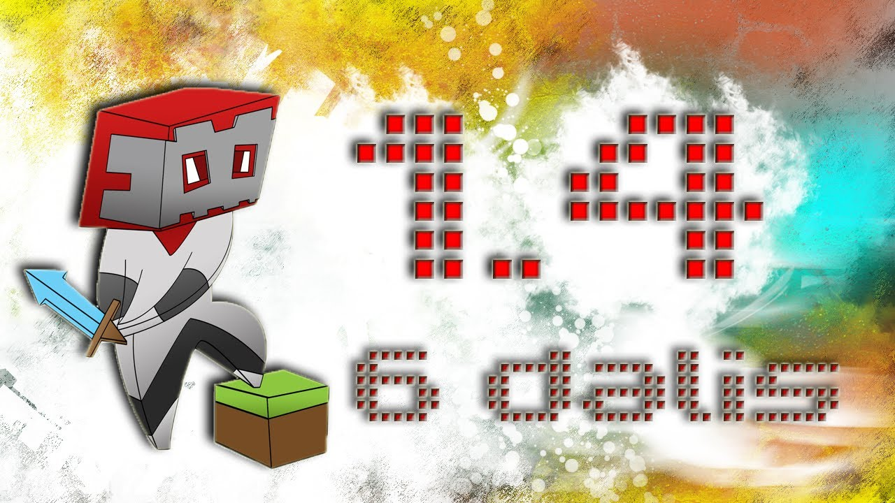

Fe Geležis - "Antėja laboratorija"
 Plačiausias kraujo tyrimų tinklas Lietuvoje 8 700 55511 pagalba@anteja.lt Tyrimų rezultatai 0 0 TYRIMAI KRAUJO TYRIMAI Alergologiniai tyrimai ir alergenų programos Bendrieji kraujo tyrimai (ląstelių tyrimai) Biocheminiai tyrimai Celiakijos tyrimai Elektrolitų ir mikroelementų tyrimai Erkių pernešamų ligų tyrimai Genetiniai tyrimai Gliukozės tyrimai Hepatitų žymenų tyrimai Hormonų tyrimai Imunologiniai tyrimai Infekcijų tyrimai Inkstų funkcijos tyrimai Kasos funkcijos tyrimai Kepenų funkcijos tyrimai Kraujo krešėjimo tyrimai Kvėpavimo takų infekcinių ligų tyrimai Lytiškai plintančių ligų tyrimai Maisto netoleravimo tyrimai Mažakraujystės tyrimai NIPT tyrimai Prostatos tyrimai Riebalų apykaitos tyrimai Skydliaukės tyrimai Širdies ir kraujagyslių tyrimai Vėžio tyrimai Virusinių ligų tyrimai Vitaminų tyrimai ŽIV tyrimai Covid-19 tyrimai TYRIMŲ PROGRAMOS + 3D ŠLAPIMO TYRIMAI KOPROLOGINIAI TYRIMAI KITI TYRIMAI PASIRUOŠIMAS TYRIMAMS DOVANŲ KUPONAI SKIEPAI Erkinio encefalito skiepai Gripo skiepai Hepatitų skiepai Kiti skiepai Pneumo skiepai Roto viruso skiepai ŽPV skiepai Rekomendacijos skiepams PASLAUGOS Šeimos gydytojai Gydytojai specialistai Sveikatos patikros Kitos paslaugos AKTUALU Mėnesio pasiūlymai Naujienos Sveikatos patarimai Ligos ir simptomatika Sveikatos ir geros savijautos vadovas Pacientų istorijos Kaip vertinti tyrimus Gydytojo iškvietimo į namus tvarka APIE MUS Istorija Karjera Kokybės užtikrinimas 360° MUS RASITE Tyrimų rezultatai Mus rasite Vilnius VilniusViršuliškių g. 65A
Pamėnkalnio g. 1
Žirmūnų g. 48A
S. Konarskio g. 2
Kareivių g. 9
Kaunas Kaunas
Lukšio g. 3, +37066102605
Birželio 23-osios g. 4
Savanorių pr. 235
Žemaičių pl. 37
Veiverių g. 142
Klaipėda Klaipėda
Šilutės pl. 4A (Sporto centras)
Jūreivių g. 19, +37066102623
Šaulių g. 21, +37066102621
Taikos pr. 28, +37066102622
Taikos pr. 141A (PC BIG-2)
Priestočio g. 16
Šiauliai Šiauliai
Gegužių g. 49-98, +37066102612
Vytauto g. 108
Vytauto g. 88
Panevėžys Panevėžys
Respublikos g. 44
Alytus Alytus
Dariaus ir Girėno g. 3-2, +37066102616
Naujoji g. 48, +37066102617
Marijampolė Marijampolė
Kosmonautų g. 14A, +37034352692
Kauno g. 62, +37066102619
Biržai Biržai
Vytauto g. 31, +37066102614
Druskininkai Druskininkai
M. K. Čiurlionio g. 65, +37066102618
Jonava Jonava
Vasario 16-osios g. 60A, +37066102611
Jurbarkas Jurbarkas
Dariaus ir Girėno g. 60, +37066102607
Kėdainiai Kėdainiai
Senosios Rinkos a. 5-25, +37066102608
Kelmė Kelmė
Vytauto Didžiojo g. 53, +37066102615
Žiūrėti visus Titulinis Tyrimai Kraujo tyrimai Mažakraujystės tyrimai Fe Geležis
Fe Geležis
3.50€ ĮsimintiGeležies trūkumas sukelia mažakraujystę, o perteklius – hemochromatozę. Geležies rodikliai gali pakisti po apsinuodijimą švinu ar kitais sunkiaisiais metalais, sergant kai kuriomis kepenų ligomis, tuberkulioze, onkologiniais bei kitais lėtiniais susirgimais.
Tyrimų informacijaGeležis (Fe) – mikroelementas, kuris įeina į hemoglobino ir mioglobino sudėtį. Šis mikroelementas dalyvauja raudonųjų kraujo kūnelių (eritrocitų) bei tam tikrų fermentų susidarymo procesuose, taip pat yra atsakinga už deguonies pernešimą į audinius.
Esant geležies deficitui, dar nepradėjus gydymo, būtina nustatyti ir feritino bei transferino koncentraciją kraujyje. Geležies trūkumas sukelia mažakraujystę, o perteklius – hemochromatozę. Geležies rodikliai gali pakisti po apsinuodijimą švinu ar kitais sunkiaisiais metalais, sergant kai kuriomis kepenų ligomis, tuberkulioze, onkologiniais bei kitais lėtiniais susirgimais. Norint išvengti nemalonių simptomų ar ligų, rekomenduojamas geležies tyrimas.
Geležies stoka gali kilti dėl:
- Greitai augantiems vaikams ir paaugliams; - Moterims dėl menstruacijų; - Nėščiosioms, netekus kraujo gimdant; - Nepilnavertės mitybos; - Vitamino C trūkumo.
Procedūrų kabinetai Klinikos Gauk naujienas pirmasKas kiek laiko būtina profilaktiškai tikrintis sveikatą? Kada metas skiepytis nuo gripo? Prenumeruokite naujienlaiškį, kad svarbiausi priminimai į Jūsų pašto dėžutę atkeliautų laiku. Sulauksite ne tik naudingos informacijos kaip rūpintis savo sveikata, bet ir geriausių pasiūlymų bei akcijų.
Klientų aptarnavimasTel: 8 700 55511
Darbo laikas:
I-V 7:00 – 19:00
VI 10:00 – 14:00
VII: Nedirbame
Atsiliepimai Очень приятный, вежливый, профессиональный персонал,VIAČESLAV
Patiko operatyvumas, nera eiliu, nerealiai mandagus ir pasaugus personalasLAIMONAS
Greitas, malonus ir neskausmingas aptarnavimas ????AUSTINA
Malonus, profesionalus personalas, tikslus priėmimo laikas pagal registracijąASTA
Labai maloni mergaite skiepino (Veiveriu g.) ir eme krauja, viska paaiskino, neskaudziai atliko proc..AUDRONĖ
Greit galėjote priimti.Nesaugiau jaučiausi laukdama prie duru su dar 3 žmonėmis kai siaučia covid. P..GODA
Greitas aptarnavimas.INDRĖ
Labai maloniai ir švelniai aptarnavo p. Orinta V. Šiauliuose, Gegužių g. laboratorijoje. Nuoširdus a..JOLANTA
Greitai gauni atsakymusNemaza kainaNERINGA
Labai patiko, kad Dovilė Varnaitė, kuri ėmė kraują yra labai draugiška. Tiek su mažais vaikiukais, t..ŽIVILĖ
Visi atsiliepimai Apie mus Administracijos kontaktai Karjera Kokybės užtikrinimas Privatumo politika Aktualu Pasiruošimas tyrimams Rekomendacijos skiepams Pirkimo ir pardavimo taisyklės Kaip pirkti? D.U.K. Slapukų politika Įmonės rekvizitaiUAB Diagnostikos laboratorija
Žemaičių plentas 37, Kaunas, LT-48178
Įmonės kodas: 300598351
A/S: LT247300010103326837
Tel. (skambinant iš užsienio) 00-370-37-245330
El. paštas: pagalba@anteja.lt
© 2020 Visos teisės saugomos. Antėja Dizainas ir programavimas:NAUJIENA!
Greitasis COVI-19 PGR tyrimų atlikimas!
COVID-19 PGR tyrimus didžiuosiuose Lietuvos miestuose galite atlikti per 1½-5 valandas*!
Covid-19 aptarnavimo linija: 8 700 77 833
*Tikslus miestų sąrašas, tyrimų atlikimo terminai bei sąlygos pateikti COVID-19 tyrimų kategorijoje